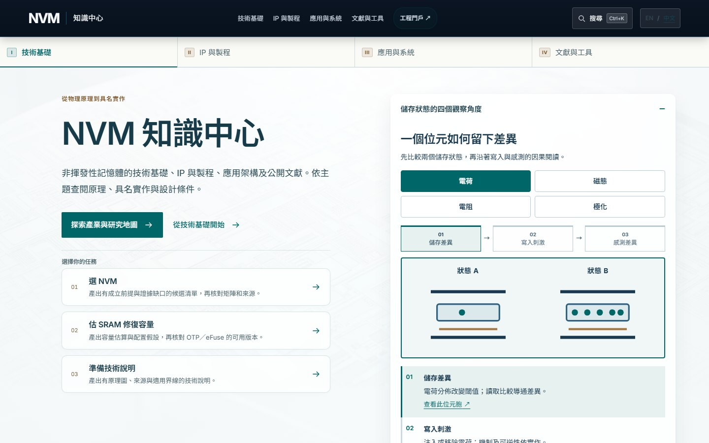
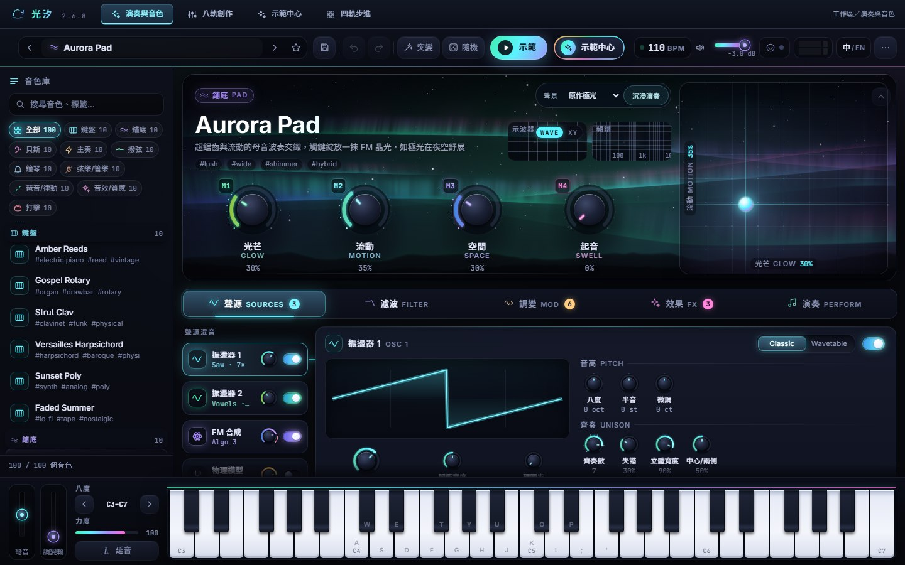

SAM HUANG / 個人作品選輯
Sam Huang.
半導體知識 × 工程實作 × 互動創作
精選專題 / 半導體與安全儲存
NVM
Knowledge Hub
從一個位元，讀懂記憶體。
探索 OTP、MTP、eFlash 與 PUF，串連非揮發性記憶體、安全儲存與技術白皮書。
探索知識中心

物理原理 → 技術選擇 → 系統脈絡
延伸閱讀 / 製程與封裝
半導體製程知識庫
循著晶圓製造流程，理解電晶體、製程整合與先進封裝。
認識製程
將理解帶進日常實作
工程工具與學習
把知識帶進練習，也記錄讓想法落地的工具與環境。
當技術成為可以參與的體驗
互動創作與遊戲
讓技術走出文件，在聲音、遊戲與探索中成為體驗。

光汐工作站
在瀏覽器探索音色、演奏與編曲，讓音樂想法逐步成形。
進入工作站
關於 SAM HUANG
知識有脈絡， 作品有自己的樣子。
我是 Sam Huang。這裡收錄我對半導體與安全儲存的知識整理，以及工程工具、學習與互動創作的實作。從理解原理開始，持續把想法做成可探索的作品。
在 GitHub 看更多